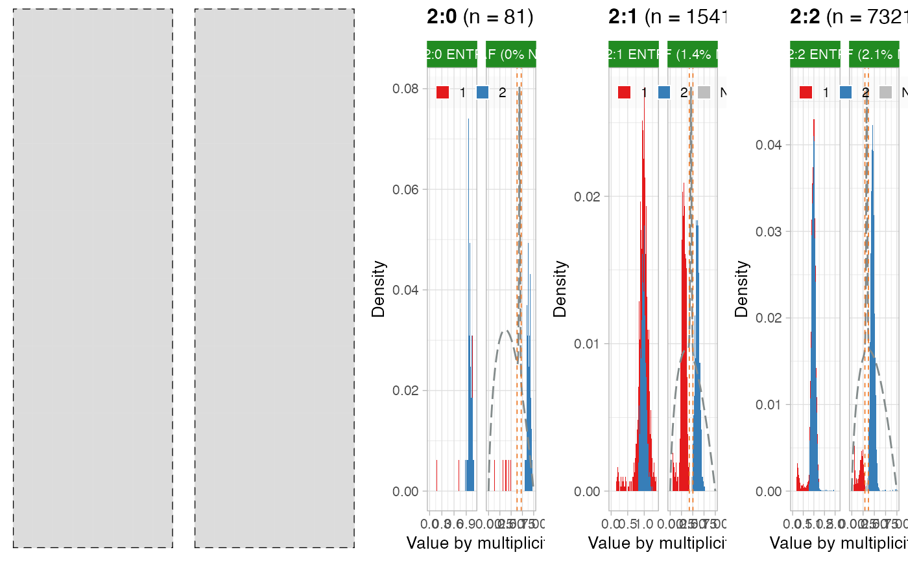

This function provides the implementation of a set of entropy-related routines that can estimate Cancer Cell Fraction values (CCFs) for the available mutations. The implemented routine is described in the package vignette `"Computation of Cancer Cell Fractions"` that is available at the URL https://caravagn.github.io/CNAqc/articles/ccf_computation.html. This function creates a field `CCF_estimates` inside the returned object which contains both the estimated CCF values and the plot of the report of this analysis.
compute_CCF( x, karyotypes = c("1:0", "1:1", "2:0", "2:1", "2:2"), entropy_quantile = 0.9 )
| x | An object of class |
|---|---|
| karyotypes | The karyotypes to use, this package supports only |
| entropy_quantile | The entropy quantile used to determine the interval in which the CCF estimates are not reliable because it is not possible to determine a precise value for the multiplicity of a mutation from its allelic frequencies. See the package vignette `"Computation of Cancer Cell Fractions"` that is available at the URL https://caravagn.github.io/CNAqc/articles/ccf_computation.html to see the detailed meaning of this parameter. |
An object of class cnaqc, with CCF values available for extraction and plotting.
Getters function CCF and plot_CCF.
data('example_dataset_CNAqc') x = init(example_dataset_CNAqc$snvs, example_dataset_CNAqc$cna, example_dataset_CNAqc$purity)#> [ CNAqc - CNA Quality Check ] #>#> ℹ Using reference genome coordinates for: GRCh38.#> ! Missing CCF column from CNA calls, adding CCF = 1 assuming clonal CNA calls.#> ℹ Input n = 13141 mutations for 267 CNA segments (267 clonal, 0 subclonal)#>#> ✓ Mapped n = 12963 mutations to clonal segments (99% of input)#> 2:1 ~ q = 0.9 ───────────────────────────────────────────────────────────────────────────────────────────────────────────────────#> ℹ Expected Binomial peak(s) for these calls (1 and 2 copies)#> # A tibble: 2 x 4 #> mutation_multiplicity karyotype peak label #> <dbl> <chr> <dbl> <chr> #> 1 1 2:1 0.308 One copy #> 2 2 2:1 0.616 Two copies#> ℹ Mixing pre/ post aneuploidy: 0.55 and 0.45#> ℹ H(x)-derived cutoffs: [0.441441441441441; 0.468468468468468]#> Warning: NAs introduced by coercion#> Warning: NAs introduced by coercion#> 2:0 ~ q = 0.9 ───────────────────────────────────────────────────────────────────────────────────────────────────────────────────#> ℹ Expected Binomial peak(s) for these calls (1 and 2 copies)#> # A tibble: 2 x 4 #> mutation_multiplicity karyotype peak label #> <dbl> <chr> <dbl> <chr> #> 1 1 2:0 0.445 One copy #> 2 2 2:0 0.89 Two copies#> ℹ Mixing pre/ post aneuploidy: 0.09 and 0.91#> ℹ H(x)-derived cutoffs: [0.657894736842105; 0.710526315789474]#> 2:2 ~ q = 0.9 ───────────────────────────────────────────────────────────────────────────────────────────────────────────────────#> ℹ Expected Binomial peak(s) for these calls (1 and 2 copies)#> # A tibble: 2 x 4 #> mutation_multiplicity karyotype peak label #> <dbl> <chr> <dbl> <chr> #> 1 1 2:2 0.235 One copy #> 2 2 2:2 0.471 Two copies#> ℹ Mixing pre/ post aneuploidy: 0.09 and 0.91#> ℹ H(x)-derived cutoffs: [0.319148936170213; 0.347517730496454]#> Warning: NAs introduced by coercion#> Warning: NAs introduced by coercion#> Warning: NAs introduced by coercion#> Warning: NAs introduced by coercion#> Warning: NAs introduced by coercion#> Warning: NAs introduced by coercion#> Warning: NAs introduced by coercion#> Warning: NAs introduced by coercion#> Warning: NAs introduced by coercion#> Warning: NAs introduced by coercion#> Warning: NAs introduced by coercion#> Warning: NAs introduced by coercion#> Warning: NAs introduced by coercion#> Warning: NAs introduced by coercion#> Warning: NAs introduced by coercion#> Warning: NAs introduced by coercion#> Warning: NAs introduced by coercion#> Warning: NAs introduced by coercion#> Warning: NAs introduced by coercion#> Warning: NAs introduced by coercion#> Warning: NAs introduced by coercion#> Warning: NAs introduced by coercion#> Warning: NAs introduced by coercion#> Warning: NAs introduced by coercion#> Warning: NAs introduced by coercion#> Warning: NAs introduced by coercion#> Warning: NAs introduced by coercion#> Warning: NAs introduced by coercion#> Warning: NAs introduced by coercion#> Warning: NAs introduced by coercion#> Warning: NAs introduced by coercion#> Warning: NAs introduced by coercion#> Warning: NAs introduced by coercion#> Warning: NAs introduced by coercion#> Warning: NAs introduced by coercion#> Warning: NAs introduced by coercion#> Warning: NAs introduced by coercion#> Warning: NAs introduced by coercion#>#>#> Summary CCF assignments. NA: not assignable with q = 0.9 ──#>#> # A tibble: 8 x 3 #> karyotype mutation_multiplicity assignments #> <chr> <dbl> <int> #> 1 2:0 1 9 #> 2 2:0 2 72 #> 3 2:1 1 886 #> 4 2:1 2 675 #> 5 2:1 NA 2 #> 6 2:2 1 1013 #> 7 2:2 2 6427 #> 8 2:2 NA 38 #> Note: NA ~ mutations not confidently assignable with q = 0.9print(x)#> [ CNAqc ] n = 13141 mutations in 267 segments (267 clonal + 0 subclonal). Genome reference: GRCh38. ──────────────────────────────────────────────────────────────────────────#> #> 2:2 [n = 7478] ■■■■■■■■■■■■■■■■■■■■■■■■■■■ #> 4:2 [n = 1893] ■■■■■■■ #> 3:2 [n = 1625] ■■■■■■ #> 2:1 [n = 1563] ■■■■■■ #> 3:0 [n = 312] ■ #>#> ℹ Sample Purity: 89% ~ Ploidy: 4.#>#> ✓ Cancer Cell Fraction (CCF) data available for karyotypes: 2:1, 2:0 and 2:2.CCF(x)#> # A tibble: 9,122 x 15 #> chr from to ref alt FILTER DP NV VAF ANNOVAR_FUNCTION #> <chr> <dbl> <dbl> <chr> <chr> <chr> <dbl> <dbl> <dbl> <chr> #> 1 chr2 3.58e5 3.58e5 C A PASS 104 58 0.558 intergenic #> 2 chr2 9.09e5 9.09e5 A G PASS 15 7 0.467 ncRNA_intronic #> 3 chr2 1.04e6 1.04e6 C T PASS 93 57 0.613 intronic #> 4 chr2 1.33e6 1.33e6 A T PASS 104 55 0.529 intronic #> 5 chr2 1.52e6 1.52e6 C T PASS 90 50 0.556 intronic #> 6 chr2 2.20e6 2.20e6 G T PASS 125 42 0.336 intronic #> 7 chr2 2.90e6 2.90e6 C T PASS 109 58 0.532 downstream #> 8 chr2 3.13e6 3.13e6 A G PASS 134 35 0.261 ncRNA_intronic #> 9 chr2 3.83e6 3.83e6 A T PASS 120 68 0.567 intergenic #> 10 chr2 3.88e6 3.88e6 T A PASS 126 10 0.0794 intergenic #> # … with 9,112 more rows, and 5 more variables: GENE <chr>, karyotype <chr>, #> # segment_id <chr>, mutation_multiplicity <dbl>, CCF <dbl>plot_CCF(x)#> Warning: Removed 2 rows containing non-finite values (stat_bin).#> Warning: Removed 2 rows containing missing values (geom_bar).#> Warning: Removed 6 rows containing missing values (geom_bar).#> Warning: Removed 2 rows containing missing values (geom_bar).#> Warning: Removed 4 rows containing missing values (geom_bar).#> Warning: Removed 38 rows containing non-finite values (stat_bin).#> Warning: Removed 2 rows containing missing values (geom_bar).#> Warning: Removed 6 rows containing missing values (geom_bar).